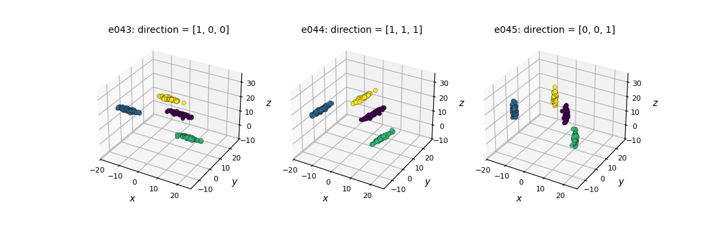
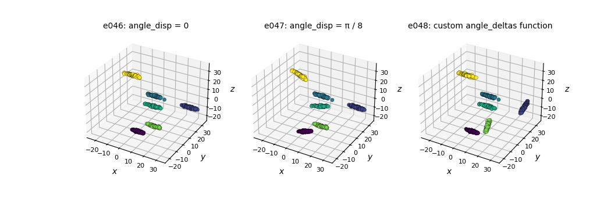
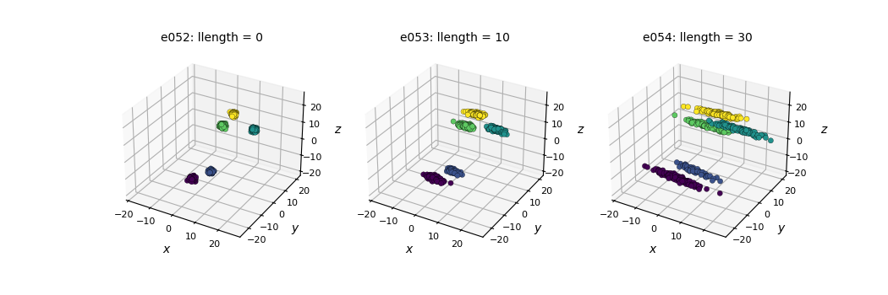
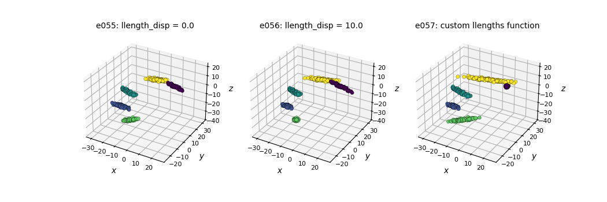
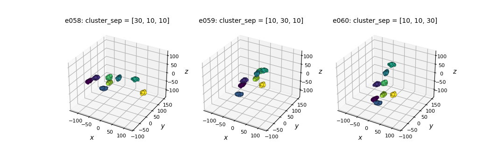
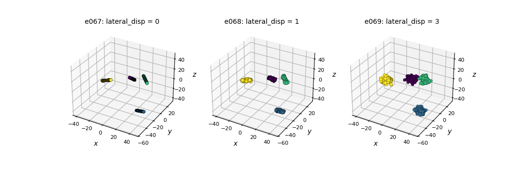
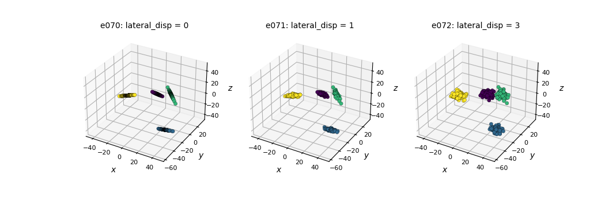
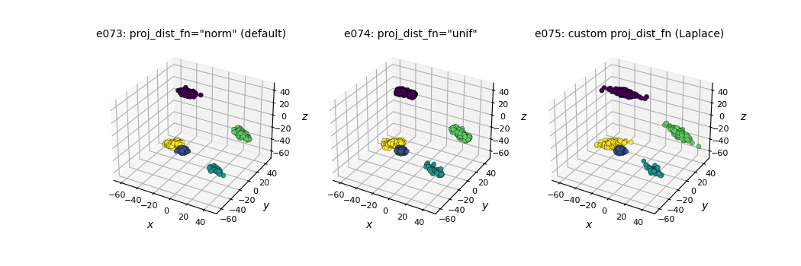
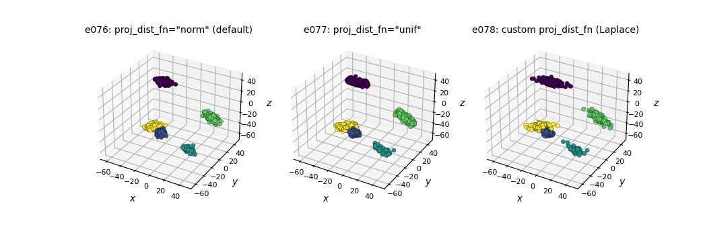

Note
Click here to download the full example code
Examples in 3D¶
This section contains several examples on how to generate 3D data with
pyclugen. To run the examples we first need to import the
clugen() function:
To make the examples exactly reproducible we'll import a random number
generator from NumPy and pass it as a parameter to
clugen(). We'll also create a small helper function
for providing us a brand new seeded generator:
import numpy as np
from numpy.random import PCG64, Generator
def rng(seed):
return Generator(PCG64(seed))
To plot these examples we use the plot_examples_3d
function:
Manipulating the direction of cluster-supporting lines¶
Using the direction parameter¶
e043 = clugen(3, 4, 500, [1, 0, 0], 0, [10, 10, 10], 15, 1.5, 0.5, rng=rng(seed))
e044 = clugen(3, 4, 500, [1, 1, 1], 0, [10, 10, 10], 15, 1.5, 0.5, rng=rng(seed))
e045 = clugen(3, 4, 500, [0, 0, 1], 0, [10, 10, 10], 15, 1.5, 0.5, rng=rng(seed))
plt = plot_examples_3d(
e043, "e043: direction = [1, 0, 0]",
e044, "e044: direction = [1, 1, 1]",
e045, "e045: direction = [0, 0, 1]")

Out:
/home/runner/work/pyclugen/pyclugen/docs/docs/examples/plot_functions.py:195: FutureWarning: Series.__getitem__ treating keys as positions is deprecated. In a future version, integer keys will always be treated as labels (consistent with DataFrame behavior). To access a value by position, use `ser.iloc[pos]`
ax.set_xlim(xmins[0], xmaxs[0])
/home/runner/work/pyclugen/pyclugen/docs/docs/examples/plot_functions.py:196: FutureWarning: Series.__getitem__ treating keys as positions is deprecated. In a future version, integer keys will always be treated as labels (consistent with DataFrame behavior). To access a value by position, use `ser.iloc[pos]`
ax.set_ylim(xmins[1], xmaxs[1])
/home/runner/work/pyclugen/pyclugen/docs/docs/examples/plot_functions.py:197: FutureWarning: Series.__getitem__ treating keys as positions is deprecated. In a future version, integer keys will always be treated as labels (consistent with DataFrame behavior). To access a value by position, use `ser.iloc[pos]`
ax.set_zlim(xmins[2], xmaxs[2])
Changing the angle_disp parameter and using a custom angle_deltas_fn function¶
seed = 321
# Custom angle_deltas function: arbitrarily rotate some clusters by 90 degrees
def angdel_90_fn(nclu, astd, rng):
return rng.choice([0, np.pi / 2], size=nclu)
e046 = clugen(3, 6, 1000, [1, 0, 0], 0, [10, 10, 10], 15, 1.5, 0.5, rng=rng(seed))
e047 = clugen(3, 6, 1000, [1, 0, 0], np.pi / 8, [10, 10, 10], 15, 1.5, 0.5, rng=rng(seed))
e048 = clugen(3, 6, 1000, [1, 0, 0], 0, [10, 10, 10], 15, 1.5, 0.5, rng=rng(seed),
angle_deltas_fn=angdel_90_fn)
plt = plot_examples_3d(
e046, "e046: angle_disp = 0",
e047, "e047: angle_disp = π / 8",
e048, "e048: custom angle_deltas function")

Out:
/home/runner/work/pyclugen/pyclugen/docs/docs/examples/plot_functions.py:195: FutureWarning: Series.__getitem__ treating keys as positions is deprecated. In a future version, integer keys will always be treated as labels (consistent with DataFrame behavior). To access a value by position, use `ser.iloc[pos]`
ax.set_xlim(xmins[0], xmaxs[0])
/home/runner/work/pyclugen/pyclugen/docs/docs/examples/plot_functions.py:196: FutureWarning: Series.__getitem__ treating keys as positions is deprecated. In a future version, integer keys will always be treated as labels (consistent with DataFrame behavior). To access a value by position, use `ser.iloc[pos]`
ax.set_ylim(xmins[1], xmaxs[1])
/home/runner/work/pyclugen/pyclugen/docs/docs/examples/plot_functions.py:197: FutureWarning: Series.__getitem__ treating keys as positions is deprecated. In a future version, integer keys will always be treated as labels (consistent with DataFrame behavior). To access a value by position, use `ser.iloc[pos]`
ax.set_zlim(xmins[2], xmaxs[2])
Specifying a main direction for each cluster and changing angle_disp¶
seed = 123
# Define a main direction for each cluster
dirs = [[1, 1, 1], [0, 0, 1], [1, 0, 0], [0, 1, 0], [-1, 1, 1]]
e049 = clugen(3, 5, 1000, dirs, 0, np.zeros(3), 20, 0, 0.2, proj_dist_fn="unif", rng=rng(seed))
e050 = clugen(3, 5, 1000, dirs, np.pi / 12, np.zeros(3), 20, 0, 0.2, proj_dist_fn="unif", rng=rng(seed))
e051 = clugen(3, 5, 1000, dirs, np.pi / 4, np.zeros(3), 20, 0, 0.2, proj_dist_fn="unif", rng=rng(seed))
plot_examples_3d(
e049, "e049: angle_disp = 0",
e050, "e050: angle_disp = π / 12",
e051, "e051: angle_disp = π / 4")
Out:
/home/runner/work/pyclugen/pyclugen/docs/docs/examples/plot_functions.py:195: FutureWarning: Series.__getitem__ treating keys as positions is deprecated. In a future version, integer keys will always be treated as labels (consistent with DataFrame behavior). To access a value by position, use `ser.iloc[pos]`
ax.set_xlim(xmins[0], xmaxs[0])
/home/runner/work/pyclugen/pyclugen/docs/docs/examples/plot_functions.py:196: FutureWarning: Series.__getitem__ treating keys as positions is deprecated. In a future version, integer keys will always be treated as labels (consistent with DataFrame behavior). To access a value by position, use `ser.iloc[pos]`
ax.set_ylim(xmins[1], xmaxs[1])
/home/runner/work/pyclugen/pyclugen/docs/docs/examples/plot_functions.py:197: FutureWarning: Series.__getitem__ treating keys as positions is deprecated. In a future version, integer keys will always be treated as labels (consistent with DataFrame behavior). To access a value by position, use `ser.iloc[pos]`
ax.set_zlim(xmins[2], xmaxs[2])
Manipulating the length of cluster-supporting lines¶
Using the llength parameter¶
e052 = clugen(3, 5, 800, [1, 0, 0], np.pi / 10, [10, 10, 10], 0, 0, 0.5, rng=rng(seed),
point_dist_fn="n")
e053 = clugen(3, 5, 800, [1, 0, 0], np.pi / 10, [10, 10, 10], 10, 0, 0.5, rng=rng(seed),
point_dist_fn="n")
e054 = clugen(3, 5, 800, [1, 0, 0], np.pi / 10, [10, 10, 10], 30, 0, 0.5, rng=rng(seed),
point_dist_fn="n")
plt = plot_examples_3d(
e052, "e052: llength = 0",
e053, "e053: llength = 10",
e054, "e054: llength = 30")

Out:
/home/runner/work/pyclugen/pyclugen/docs/docs/examples/plot_functions.py:195: FutureWarning: Series.__getitem__ treating keys as positions is deprecated. In a future version, integer keys will always be treated as labels (consistent with DataFrame behavior). To access a value by position, use `ser.iloc[pos]`
ax.set_xlim(xmins[0], xmaxs[0])
/home/runner/work/pyclugen/pyclugen/docs/docs/examples/plot_functions.py:196: FutureWarning: Series.__getitem__ treating keys as positions is deprecated. In a future version, integer keys will always be treated as labels (consistent with DataFrame behavior). To access a value by position, use `ser.iloc[pos]`
ax.set_ylim(xmins[1], xmaxs[1])
/home/runner/work/pyclugen/pyclugen/docs/docs/examples/plot_functions.py:197: FutureWarning: Series.__getitem__ treating keys as positions is deprecated. In a future version, integer keys will always be treated as labels (consistent with DataFrame behavior). To access a value by position, use `ser.iloc[pos]`
ax.set_zlim(xmins[2], xmaxs[2])
Changing the llength_disp parameter and using a custom llengths_fn function¶
# Custom llengths function: line lengths tend to grow for each new cluster
def llen_grow_fn(nclu, llen, llenstd, rng):
return llen * np.arange(nclu) + rng.normal(scale=llenstd, size=nclu)
e055 = clugen(3, 5, 800, [1, 0, 0], np.pi / 10, [10, 10, 10], 15, 0.0, 0.5, rng=rng(seed),
point_dist_fn="n")
e056 = clugen(3, 5, 800, [1, 0, 0], np.pi / 10, [10, 10, 10], 15, 10.0, 0.5, rng=rng(seed),
point_dist_fn="n")
e057 = clugen(3, 5, 800, [1, 0, 0], np.pi / 10, [10, 10, 10], 10, 0.1, 0.5, rng=rng(seed),
point_dist_fn="n", llengths_fn=llen_grow_fn)
plt = plot_examples_3d(
e055, "e055: llength_disp = 0.0",
e056, "e056: llength_disp = 10.0",
e057, "e057: custom llengths function")

Out:
/home/runner/work/pyclugen/pyclugen/docs/docs/examples/plot_functions.py:195: FutureWarning: Series.__getitem__ treating keys as positions is deprecated. In a future version, integer keys will always be treated as labels (consistent with DataFrame behavior). To access a value by position, use `ser.iloc[pos]`
ax.set_xlim(xmins[0], xmaxs[0])
/home/runner/work/pyclugen/pyclugen/docs/docs/examples/plot_functions.py:196: FutureWarning: Series.__getitem__ treating keys as positions is deprecated. In a future version, integer keys will always be treated as labels (consistent with DataFrame behavior). To access a value by position, use `ser.iloc[pos]`
ax.set_ylim(xmins[1], xmaxs[1])
/home/runner/work/pyclugen/pyclugen/docs/docs/examples/plot_functions.py:197: FutureWarning: Series.__getitem__ treating keys as positions is deprecated. In a future version, integer keys will always be treated as labels (consistent with DataFrame behavior). To access a value by position, use `ser.iloc[pos]`
ax.set_zlim(xmins[2], xmaxs[2])
Manipulating relative cluster positions¶
Using the cluster_sep parameter¶
e058 = clugen(3, 8, 1000, [1, 1, 1], np.pi / 4, [30, 10, 10], 25, 4, 3, rng=rng(seed))
e059 = clugen(3, 8, 1000, [1, 1, 1], np.pi / 4, [10, 30, 10], 25, 4, 3, rng=rng(seed))
e060 = clugen(3, 8, 1000, [1, 1, 1], np.pi / 4, [10, 10, 30], 25, 4, 3, rng=rng(seed))
plt = plot_examples_3d(
e058, "e058: cluster_sep = [30, 10, 10]",
e059, "e059: cluster_sep = [10, 30, 10]",
e060, "e060: cluster_sep = [10, 10, 30]")

Out:
/home/runner/work/pyclugen/pyclugen/docs/docs/examples/plot_functions.py:195: FutureWarning: Series.__getitem__ treating keys as positions is deprecated. In a future version, integer keys will always be treated as labels (consistent with DataFrame behavior). To access a value by position, use `ser.iloc[pos]`
ax.set_xlim(xmins[0], xmaxs[0])
/home/runner/work/pyclugen/pyclugen/docs/docs/examples/plot_functions.py:196: FutureWarning: Series.__getitem__ treating keys as positions is deprecated. In a future version, integer keys will always be treated as labels (consistent with DataFrame behavior). To access a value by position, use `ser.iloc[pos]`
ax.set_ylim(xmins[1], xmaxs[1])
/home/runner/work/pyclugen/pyclugen/docs/docs/examples/plot_functions.py:197: FutureWarning: Series.__getitem__ treating keys as positions is deprecated. In a future version, integer keys will always be treated as labels (consistent with DataFrame behavior). To access a value by position, use `ser.iloc[pos]`
ax.set_zlim(xmins[2], xmaxs[2])
Changing the cluster_offset parameter and using a custom clucenters_fn function¶
# Custom clucenters function: places clusters in a diagonal
def centers_diag_fn(nclu, csep, coff, rng):
return np.ones((nclu, len(csep))) * np.arange(1, nclu + 1)[:, None] * np.max(csep) + coff
e061 = clugen(3, 8, 1000, [1, 1, 1], np.pi / 4, [10, 10, 10], 12, 3, 2.5, rng=rng(seed))
e062 = clugen(3, 8, 1000, [1, 1, 1], np.pi / 4, [10, 10, 10], 12, 3, 2.5, rng=rng(seed),
cluster_offset=[30, -30, 30])
e063 = clugen(3, 8, 1000, [1, 1, 1], np.pi / 4, [10, 10, 10], 12, 3, 2.5, rng=rng(seed),
cluster_offset=[-40, -40, -40], clucenters_fn=centers_diag_fn)
plt = plot_examples_3d(
e061, "e061: default",
e062, "e062: cluster_offset=[30, -30, 30]",
e063, "e063: custom clucenters function")
Out:
/home/runner/work/pyclugen/pyclugen/docs/docs/examples/plot_functions.py:195: FutureWarning: Series.__getitem__ treating keys as positions is deprecated. In a future version, integer keys will always be treated as labels (consistent with DataFrame behavior). To access a value by position, use `ser.iloc[pos]`
ax.set_xlim(xmins[0], xmaxs[0])
/home/runner/work/pyclugen/pyclugen/docs/docs/examples/plot_functions.py:196: FutureWarning: Series.__getitem__ treating keys as positions is deprecated. In a future version, integer keys will always be treated as labels (consistent with DataFrame behavior). To access a value by position, use `ser.iloc[pos]`
ax.set_ylim(xmins[1], xmaxs[1])
/home/runner/work/pyclugen/pyclugen/docs/docs/examples/plot_functions.py:197: FutureWarning: Series.__getitem__ treating keys as positions is deprecated. In a future version, integer keys will always be treated as labels (consistent with DataFrame behavior). To access a value by position, use `ser.iloc[pos]`
ax.set_zlim(xmins[2], xmaxs[2])
Lateral dispersion and placement of point projections on the line¶
Normal projection placement (default): proj_dist_fn="norm"¶
e064 = clugen(3, 4, 1000, [1, 0, 0], np.pi / 2, [20, 20, 20], 13, 2, 0.0, rng=rng(seed))
e065 = clugen(3, 4, 1000, [1, 0, 0], np.pi / 2, [20, 20, 20], 13, 2, 1.0, rng=rng(seed))
e066 = clugen(3, 4, 1000, [1, 0, 0], np.pi / 2, [20, 20, 20], 13, 2, 3.0, rng=rng(seed))
plt = plot_examples_3d(
e064, "e064: lateral_disp = 0",
e065, "e065: lateral_disp = 1",
e066, "e066: lateral_disp = 3")
Out:
/home/runner/work/pyclugen/pyclugen/docs/docs/examples/plot_functions.py:195: FutureWarning: Series.__getitem__ treating keys as positions is deprecated. In a future version, integer keys will always be treated as labels (consistent with DataFrame behavior). To access a value by position, use `ser.iloc[pos]`
ax.set_xlim(xmins[0], xmaxs[0])
/home/runner/work/pyclugen/pyclugen/docs/docs/examples/plot_functions.py:196: FutureWarning: Series.__getitem__ treating keys as positions is deprecated. In a future version, integer keys will always be treated as labels (consistent with DataFrame behavior). To access a value by position, use `ser.iloc[pos]`
ax.set_ylim(xmins[1], xmaxs[1])
/home/runner/work/pyclugen/pyclugen/docs/docs/examples/plot_functions.py:197: FutureWarning: Series.__getitem__ treating keys as positions is deprecated. In a future version, integer keys will always be treated as labels (consistent with DataFrame behavior). To access a value by position, use `ser.iloc[pos]`
ax.set_zlim(xmins[2], xmaxs[2])
Uniform projection placement: proj_dist_fn="unif"¶
e067 = clugen(3, 4, 1000, [1, 0, 0], np.pi / 2, [20, 20, 20], 13, 2, 0.0, rng=rng(seed),
proj_dist_fn="unif")
e068 = clugen(3, 4, 1000, [1, 0, 0], np.pi / 2, [20, 20, 20], 13, 2, 1.0, rng=rng(seed),
proj_dist_fn="unif")
e069 = clugen(3, 4, 1000, [1, 0, 0], np.pi / 2, [20, 20, 20], 13, 2, 3.0, rng=rng(seed),
proj_dist_fn="unif")
plt = plot_examples_3d(
e067, "e067: lateral_disp = 0",
e068, "e068: lateral_disp = 1",
e069, "e069: lateral_disp = 3")

Out:
/home/runner/work/pyclugen/pyclugen/docs/docs/examples/plot_functions.py:195: FutureWarning: Series.__getitem__ treating keys as positions is deprecated. In a future version, integer keys will always be treated as labels (consistent with DataFrame behavior). To access a value by position, use `ser.iloc[pos]`
ax.set_xlim(xmins[0], xmaxs[0])
/home/runner/work/pyclugen/pyclugen/docs/docs/examples/plot_functions.py:196: FutureWarning: Series.__getitem__ treating keys as positions is deprecated. In a future version, integer keys will always be treated as labels (consistent with DataFrame behavior). To access a value by position, use `ser.iloc[pos]`
ax.set_ylim(xmins[1], xmaxs[1])
/home/runner/work/pyclugen/pyclugen/docs/docs/examples/plot_functions.py:197: FutureWarning: Series.__getitem__ treating keys as positions is deprecated. In a future version, integer keys will always be treated as labels (consistent with DataFrame behavior). To access a value by position, use `ser.iloc[pos]`
ax.set_zlim(xmins[2], xmaxs[2])
Custom projection placement using the Laplace distribution¶
# Custom proj_dist_fn: point projections placed using the Laplace distribution
def proj_laplace(len, n, rng):
return rng.laplace(scale=len / 6, size=n)
e070 = clugen(3, 4, 1000, [1, 0, 0], np.pi / 2, [20, 20, 20], 13, 2, 0.0, rng=rng(seed),
proj_dist_fn=proj_laplace)
e071 = clugen(3, 4, 1000, [1, 0, 0], np.pi / 2, [20, 20, 20], 13, 2, 1.0, rng=rng(seed),
proj_dist_fn=proj_laplace)
e072 = clugen(3, 4, 1000, [1, 0, 0], np.pi / 2, [20, 20, 20], 13, 2, 3.0, rng=rng(seed),
proj_dist_fn=proj_laplace)
plt = plot_examples_3d(
e070, "e070: lateral_disp = 0",
e071, "e071: lateral_disp = 1",
e072, "e072: lateral_disp = 3")

Out:
/home/runner/work/pyclugen/pyclugen/docs/docs/examples/plot_functions.py:195: FutureWarning: Series.__getitem__ treating keys as positions is deprecated. In a future version, integer keys will always be treated as labels (consistent with DataFrame behavior). To access a value by position, use `ser.iloc[pos]`
ax.set_xlim(xmins[0], xmaxs[0])
/home/runner/work/pyclugen/pyclugen/docs/docs/examples/plot_functions.py:196: FutureWarning: Series.__getitem__ treating keys as positions is deprecated. In a future version, integer keys will always be treated as labels (consistent with DataFrame behavior). To access a value by position, use `ser.iloc[pos]`
ax.set_ylim(xmins[1], xmaxs[1])
/home/runner/work/pyclugen/pyclugen/docs/docs/examples/plot_functions.py:197: FutureWarning: Series.__getitem__ treating keys as positions is deprecated. In a future version, integer keys will always be treated as labels (consistent with DataFrame behavior). To access a value by position, use `ser.iloc[pos]`
ax.set_zlim(xmins[2], xmaxs[2])
Controlling final point positions from their projections on the cluster-supporting line¶
Points on hyperplane orthogonal to cluster-supporting line (default): point_dist_fn="n-1"¶
# Custom proj_dist_fn: point projections placed using the Laplace distribution
def proj_laplace(len, n, rng):
return rng.laplace(scale=len / 6, size=n)
e073 = clugen(3, 5, 1500, [1, 0, 0], np.pi / 3, [20, 20, 20], 22, 3, 2, rng=rng(seed))
e074 = clugen(3, 5, 1500, [1, 0, 0], np.pi / 3, [20, 20, 20], 22, 3, 2, rng=rng(seed),
proj_dist_fn="unif")
e075 = clugen(3, 5, 1500, [1, 0, 0], np.pi / 3, [20, 20, 20], 22, 3, 2, rng=rng(seed),
proj_dist_fn=proj_laplace)
plt = plot_examples_3d(
e073, "e073: proj_dist_fn=\"norm\" (default)",
e074, "e074: proj_dist_fn=\"unif\"",
e075, "e075: custom proj_dist_fn (Laplace)")

Out:
/home/runner/work/pyclugen/pyclugen/docs/docs/examples/plot_functions.py:195: FutureWarning: Series.__getitem__ treating keys as positions is deprecated. In a future version, integer keys will always be treated as labels (consistent with DataFrame behavior). To access a value by position, use `ser.iloc[pos]`
ax.set_xlim(xmins[0], xmaxs[0])
/home/runner/work/pyclugen/pyclugen/docs/docs/examples/plot_functions.py:196: FutureWarning: Series.__getitem__ treating keys as positions is deprecated. In a future version, integer keys will always be treated as labels (consistent with DataFrame behavior). To access a value by position, use `ser.iloc[pos]`
ax.set_ylim(xmins[1], xmaxs[1])
/home/runner/work/pyclugen/pyclugen/docs/docs/examples/plot_functions.py:197: FutureWarning: Series.__getitem__ treating keys as positions is deprecated. In a future version, integer keys will always be treated as labels (consistent with DataFrame behavior). To access a value by position, use `ser.iloc[pos]`
ax.set_zlim(xmins[2], xmaxs[2])
Points around projection on cluster-supporting line: point_dist_fn="n"¶
# Custom proj_dist_fn: point projections placed using the Laplace distribution
def proj_laplace(len, n, rng):
return rng.laplace(scale=len / 6, size=n)
e076 = clugen(3, 5, 1500, [1, 0, 0], np.pi / 3, [20, 20, 20], 22, 3, 2, rng=rng(seed),
point_dist_fn="n")
e077 = clugen(3, 5, 1500, [1, 0, 0], np.pi / 3, [20, 20, 20], 22, 3, 2, rng=rng(seed),
point_dist_fn="n", proj_dist_fn="unif")
e078 = clugen(3, 5, 1500, [1, 0, 0], np.pi / 3, [20, 20, 20], 22, 3, 2, rng=rng(seed),
point_dist_fn="n", proj_dist_fn=proj_laplace)
plt = plot_examples_3d(
e076, "e076: proj_dist_fn=\"norm\" (default)",
e077, "e077: proj_dist_fn=\"unif\"",
e078, "e078: custom proj_dist_fn (Laplace)")

Out:
/home/runner/work/pyclugen/pyclugen/docs/docs/examples/plot_functions.py:195: FutureWarning: Series.__getitem__ treating keys as positions is deprecated. In a future version, integer keys will always be treated as labels (consistent with DataFrame behavior). To access a value by position, use `ser.iloc[pos]`
ax.set_xlim(xmins[0], xmaxs[0])
/home/runner/work/pyclugen/pyclugen/docs/docs/examples/plot_functions.py:196: FutureWarning: Series.__getitem__ treating keys as positions is deprecated. In a future version, integer keys will always be treated as labels (consistent with DataFrame behavior). To access a value by position, use `ser.iloc[pos]`
ax.set_ylim(xmins[1], xmaxs[1])
/home/runner/work/pyclugen/pyclugen/docs/docs/examples/plot_functions.py:197: FutureWarning: Series.__getitem__ treating keys as positions is deprecated. In a future version, integer keys will always be treated as labels (consistent with DataFrame behavior). To access a value by position, use `ser.iloc[pos]`
ax.set_zlim(xmins[2], xmaxs[2])
Custom point placement using the exponential distribution¶
For this example we require the
clupoints_n_1_template()
helper function:
# Custom point_dist_fn: final points placed using the Exponential distribution
def clupoints_n_1_exp(projs, lat_std, len, clu_dir, clu_ctr, rng):
def dist_exp(npts, lstd, rg):
return lstd * rg.exponential(scale=2 / lstd, size=npts)
return clupoints_n_1_template(projs, lat_std, clu_dir, dist_exp, rng=rng)
# Custom proj_dist_fn: point projections placed using the Laplace distribution
def proj_laplace(len, n, rng):
return rng.laplace(scale=len / 6, size=n)
e079 = clugen(3, 5, 1500, [1, 0, 0], np.pi / 3, [20, 20, 20], 22, 3, 2, rng=rng(seed),
point_dist_fn=clupoints_n_1_exp)
e080 = clugen(3, 5, 1500, [1, 0, 0], np.pi / 3, [20, 20, 20], 22, 3, 2, rng=rng(seed),
point_dist_fn=clupoints_n_1_exp, proj_dist_fn="unif")
e081 = clugen(3, 5, 1500, [1, 0, 0], np.pi / 3, [20, 20, 20], 22, 3, 2, rng=rng(seed),
point_dist_fn=clupoints_n_1_exp, proj_dist_fn=proj_laplace)
plt = plot_examples_3d(
e079, "e079: proj_dist_fn=\"norm\" (default)",
e080, "e080: proj_dist_fn=\"unif\"",
e081, "e081: custom proj_dist_fn (Laplace)")
Out:
/home/runner/work/pyclugen/pyclugen/docs/docs/examples/plot_functions.py:195: FutureWarning: Series.__getitem__ treating keys as positions is deprecated. In a future version, integer keys will always be treated as labels (consistent with DataFrame behavior). To access a value by position, use `ser.iloc[pos]`
ax.set_xlim(xmins[0], xmaxs[0])
/home/runner/work/pyclugen/pyclugen/docs/docs/examples/plot_functions.py:196: FutureWarning: Series.__getitem__ treating keys as positions is deprecated. In a future version, integer keys will always be treated as labels (consistent with DataFrame behavior). To access a value by position, use `ser.iloc[pos]`
ax.set_ylim(xmins[1], xmaxs[1])
/home/runner/work/pyclugen/pyclugen/docs/docs/examples/plot_functions.py:197: FutureWarning: Series.__getitem__ treating keys as positions is deprecated. In a future version, integer keys will always be treated as labels (consistent with DataFrame behavior). To access a value by position, use `ser.iloc[pos]`
ax.set_zlim(xmins[2], xmaxs[2])
Manipulating cluster sizes¶
# Custom clusizes_fn (e083): cluster sizes determined via the uniform distribution,
# no correction for total points
def clusizes_unif(nclu, npts, ae, rng):
return rng.integers(low=1, high=2 * npts / nclu + 1, size=nclu)
# Custom clusizes_fn (e084): clusters all have the same size, no correction for total points
def clusizes_equal(nclu, npts, ae, rng):
return (npts // nclu) * np.ones(nclu, dtype=int)
# Custom clucenters_fn (all): yields fixed positions for the clusters
def centers_fixed(nclu, csep, coff, rng):
return np.array([
[-csep[0], -csep[1], -csep[2]],
[csep[0], -csep[1], -csep[2]],
[-csep[0], csep[1], csep[2]],
[csep[0], csep[1], csep[2]]])
e082 = clugen(3, 4, 1500, [1, 1, 1], np.pi, [20, 20, 20], 0, 0, 5, rng=rng(seed),
clucenters_fn=centers_fixed, point_dist_fn="n")
e083 = clugen(3, 4, 1500, [1, 1, 1], np.pi, [20, 20, 20], 0, 0, 5, rng=rng(seed),
clucenters_fn=centers_fixed, clusizes_fn=clusizes_unif, point_dist_fn="n")
e084 = clugen(3, 4, 1500, [1, 1, 1], np.pi, [20, 20, 20], 0, 0, 5, rng=rng(seed),
clucenters_fn=centers_fixed, clusizes_fn=clusizes_equal, point_dist_fn="n")
plt = plot_examples_3d(
e082, "e082: normal dist. (default)",
e083, "e083: unif. dist. (custom)",
e084, "e084: equal size (custom)")
Out:
/home/runner/work/pyclugen/pyclugen/docs/docs/examples/plot_functions.py:195: FutureWarning: Series.__getitem__ treating keys as positions is deprecated. In a future version, integer keys will always be treated as labels (consistent with DataFrame behavior). To access a value by position, use `ser.iloc[pos]`
ax.set_xlim(xmins[0], xmaxs[0])
/home/runner/work/pyclugen/pyclugen/docs/docs/examples/plot_functions.py:196: FutureWarning: Series.__getitem__ treating keys as positions is deprecated. In a future version, integer keys will always be treated as labels (consistent with DataFrame behavior). To access a value by position, use `ser.iloc[pos]`
ax.set_ylim(xmins[1], xmaxs[1])
/home/runner/work/pyclugen/pyclugen/docs/docs/examples/plot_functions.py:197: FutureWarning: Series.__getitem__ treating keys as positions is deprecated. In a future version, integer keys will always be treated as labels (consistent with DataFrame behavior). To access a value by position, use `ser.iloc[pos]`
ax.set_zlim(xmins[2], xmaxs[2])
Total running time of the script: ( 0 minutes 5.871 seconds)
Download Python source code: plot_3_3d_examples.py